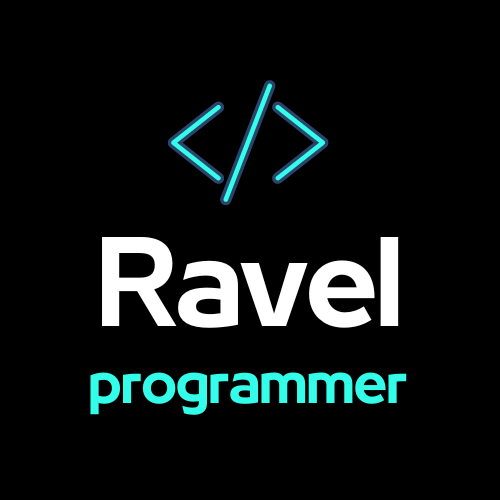

Ravel
Programmer
Programmer
Há muitos anos, em um pequeno escritório no coração de uma cidade vibrante, nasceu uma empresa que iria moldar o futuro da programação. Era o ano de 2005 quando Richard Ravel, um jovem visionário, fundou a Ravel Programmer. Nascia ali uma história de inovação, dedicação e sucesso que perdura até os dias de hoje.
Richard Ravel, um talentoso programador, tinha um sonho ousado: criar uma empresa que pudesse oferecer soluções tecnológicas inovadoras para empresas em todo o mundo. Com um computador, uma conexão à internet e uma mente cheia de ideias, ele deu os primeiros passos da Ravel Programmer. No início, eram apenas ele e seu melhor amigo, Sarah, trabalhando juntos em projetos de programação.
Os desafios eram muitos, mas a determinação de Richard e Sarah era inabalável. Eles trabalharam incansavelmente para aprimorar suas habilidades e expandir sua rede de contatos. Finalmente, o grande dia chegou quando conseguiram seu primeiro cliente, uma pequena empresa local. Foi um marco importante, que trouxe reconhecimento e confiança em seu trabalho.
Com o tempo, a reputação da Ravel Programmer cresceu, e a demanda por seus serviços explodiu. A empresa expandiu sua equipe, atraindo alguns dos melhores talentos da área de programação. Eles se especializaram em uma variedade de tecnologias e começaram a atender clientes em todo o país. Richard e Sarah não apenas eram visionários, mas também líderes inspiradores, que compartilhavam sua paixão pela inovação com todos que trabalhavam na empresa.
Hoje, a Ravel Programmer é uma empresa global com escritórios em várias partes do mundo. Sua equipe diversificada e talentosa continua a moldar o futuro da tecnologia, criando soluções que tornam o mundo mais conectado e eficiente. Richard Ravel e Sarah permanecem à frente da empresa, guiando-a com sua visão e paixão pelo progresso tecnológico.
A história da Ravel Programmer é uma prova de que sonhos ousados, trabalho árduo e compromisso com a inovação podem levar a grandes conquistas. À medida que eles olham para o futuro, sua determinação continua a inspirar não apenas seus funcionários, mas também toda a indústria de programação. A Ravel Programmer é uma história de sucesso que está longe de chegar ao fim, e o mundo espera ansiosamente para ver o que eles criarão a seguir.